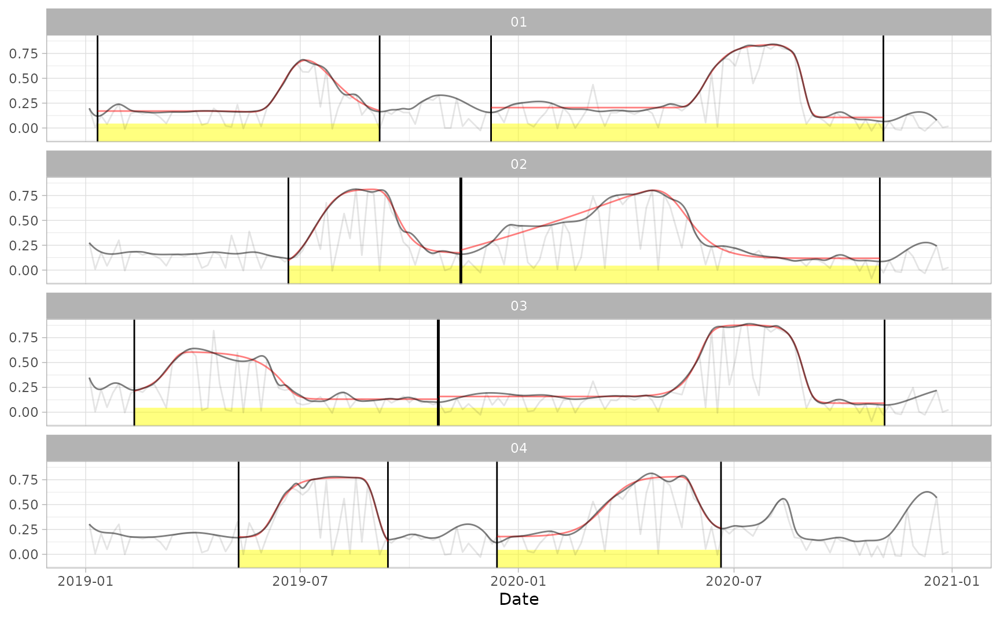
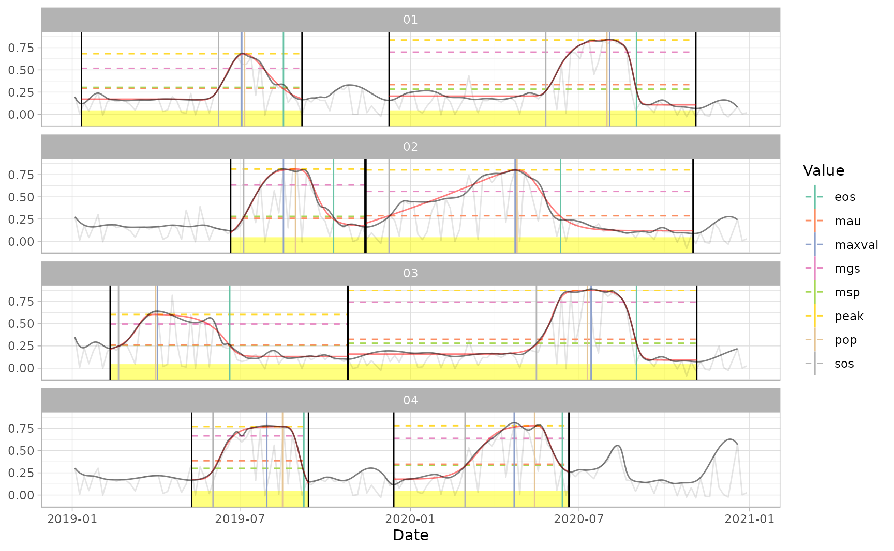

This vignette describes a use case to process a sample Sentinel-2 time series and extract information about seasonality.
Functions developed in the package {sen2rts} are run sequentially, following this workflow:
Package {sen2r} must be used to generate the local raster data over the area of interest, since {sen2rts} is built to read a Sentinel-2 image archive in the {sen2r} output structure. In this tutorial the following sample archive is being used:
The following code could be used to produce it (but see the note below the code before launching it):
library(sen2r)
library(sf)
## Define the directories to store SAFE archives and outputs
samplecrops_dir <- file.path(dirname(attr(load_binpaths(), "path")), "samplecrops")
safe_dir <- file.path(dirname(attr(load_binpaths(), "path")), "safe")
# you can replace the previous lines with the paths of any desired folder
# (in an existing parent directory)
dir.create(samplecrops_dir, showWarnings = FALSE)
dir.create(safe_dir, showWarnings = FALSE)
## Define the output extent
samplecrops_poly <- st_sfc(st_polygon(list(
matrix(
c(733500, 4971600,
733500, 4973580,
735480, 4973580,
735480, 4971600,
733500, 4971600),
ncol = 2, byrow = TRUE
)
)), crs = 32632)
## Install Sen2Cor (used to process SAFE L1C archives)
install_sen2cor()
## Launch sen2r() to download Sentinel-2 data and produce the archive
sen2r(
gui = FALSE,
extent = samplecrops_poly,
extent_name = "samplecrops",
timewindow = c("2019-01-01", "2020-12-31"),
list_prods = c("SCL"), # you can add "BOA" for eventual future usage
list_indices = "NDVI",
sen2cor_use_dem = TRUE,
path_l1c = safe_dir,
path_l2a = safe_dir,
path_out = samplecrops_dir
)NOTE: producing the output archive with this command requires a lot of patience, since most of the required SAFE archives must be ordered from ESA Long Term Archive and Level-1C archives must be processed to obtain the corresponding Level-2A ones.
In order to speed-up this step, the archive can be downloaded from this Zenodo repository using the following code instead than the previous chunk:
## Define the directory to store outputs
samplecrops_dir <- file.path(dirname(attr(load_binpaths(), "path")), "samplecrops")
# you can replace the previous line with the paths of any desired folder
# (in an existing parent directory)
dir.create(samplecrops_dir, showWarnings = FALSE)
## Download and extract the sample archives
samplecrops_url <- "https://zenodo.org/record/4620934/files"
for (sel_y in 2019:2020) { # can be extended up to 2015:2020
for (sel_p in c("SCL", "NDVI")) {
download.file(
file.path(samplecrops_url, paste0("S2X2A_",sel_y,"_022_samplecrops_",sel_p,"_10.zip")),
temp_zip_path <- tempfile(fileext = ".zip")
)
unzip(temp_zip_path, exdir = file.path(samplecrops_dir, sel_p))
file.remove(temp_zip_path)
}
}“Raw” time series can be extracted from the data archive using the function extract_s2ts(). Required inputs are:
sf or sfc containing the features over which extracting the time series.The function read_s2cube() can be used to easily obtain the required paths passing it the main path of the {sen2r} archive, the product type to read and some other additional parameters which can be used to filter the existing rasters (time window, Sentinel-2 orbits or a specific sensor). See the documentation for additional details.
The spatial file can contain point or polygon features. In the first case, raster values overlayed by points are used; in the second case, cells covered by each polygon are averaged, additionally using a quality data (SCL and/or CLD) to compute a weighted average. Moreover, in both the cases the additional quality layers can be used to assign a quality flag to each time series value (see the function documentation for details). In the case of SCL, each surface class can be assigned to a weight value using the function scl_weights().
In this example, SCL archive is used both to weight averages over polygons and to assign quality flags to time series. The default SCL weights are used, with the exception of class “snow” (since snow is a rare event in the area of interest, pixels classified as snow are more often errors of classification; so, value “0” is used).
library(sen2rts)
## Read image paths
sen2r_ndvi_paths <- read_s2cube(
samplecrops_dir,
prod_type = "NDVI",
time_window = c("2019-01-01", "2020-12-31")
)
sen2r_scl_paths <- read_s2cube(
samplecrops_dir,
prod_type = "SCL",
time_window = c("2019-01-01", "2020-12-31")
)
# time_window can be extended up to c("2015-07-01", "2020-12-31")
## Read sample polygons
data(samplecrops)
# first 4 polygons are used: skip the following line to use all the 12 ones.
samplecrops <- samplecrops[1:4,]
## Extract TS
ts_raw <- extract_s2ts(
sen2r_ndvi_paths,
samplecrops,
scl_paths = sen2r_scl_paths,
scl_w = scl_weights(snow = 0),
in_sf_id = "fid"
)
# Rescale values (this is needed since rasters were saved as Int16
# with a scale factor of 10000)
ts_raw$value <- ts_raw$value / 1E4The output is an object of class s2ts, which basically is a data.table associated with specific methods for printing and plotting. Print method shows a preview of the data.table, with first 4 ID and first/last 5 dates; values are accompanied by symbols which summarises the value of the quality flag.
print(ts_raw, topn = 5) # standard visualisation## A raw s2ts time series with 141 dates and 4 IDs.
## Date Orbit Sensor 01 02 03 04
## 1: 2019-01-04 022 2A 0.198677164 ○ 0.275262139 ○ 0.348486523 ○ 0.304735257 ○
## 2: 2019-01-09 022 2B 0.007140325 ○ 0.009556043 ○ 0.005936018 ○ 0.006098119 ○
## 3: 2019-01-14 022 2A 0.124776814 ○ 0.177525636 ○ 0.228511524 ○ 0.208502085 ○
## 4: 2019-01-19 022 2B 0.038714396 ○ 0.042100174 ○ 0.049539241 ○ 0.049726541 ○
## 5: 2019-01-24 022 2A 0.154739921 ○ 0.163076289 ○ 0.196441886 ○ 0.214882679 ○
## ---
## 137: 2020-12-04 022 2A 0.007280689 ○ 0.008712644 ○ 0.006281991 ○ 0.004105747 ○
## 138: 2020-12-09 022 2B -0.029473375 ○ -0.032747440 ○ -0.026344074 ○ -0.022775444 ○
## 139: 2020-12-19 022 2B 0.082687887 ○ 0.245273945 ○ 0.217815478 ○ 0.576268384 ○
## 140: 2020-12-24 022 2A 0.005621169 ○ 0.005258656 ○ 0.002072325 ○ 0.002197806 ○
## 141: 2020-12-29 022 2B 0.017024807 ○ 0.026785510 ○ 0.023719102 ○ 0.025177011 ○
##
## Quality flags: ● [1] ◕ [0.9,1) ◑ [0.75,0.9) ◔ [0.5,0.75) ○ [0,0.5)
data.table::as.data.table(ts_raw) # conversion in data.table allows showing all attributes## id date orbit sensor value qa
## 1: 01 2019-01-04 022 2A 0.198677164 0.2849574
## 2: 01 2019-01-09 022 2B 0.007140325 0.0000000
## 3: 01 2019-01-14 022 2A 0.124776814 0.3341486
## 4: 01 2019-01-19 022 2B 0.038714396 0.0000000
## 5: 01 2019-01-24 022 2A 0.154739921 0.3212616
## ---
## 560: 04 2020-12-04 022 2A 0.004105747 0.0000000
## 561: 04 2020-12-09 022 2B -0.022775444 0.0000000
## 562: 04 2020-12-19 022 2B 0.576268384 0.4434169
## 563: 04 2020-12-24 022 2A 0.002197806 0.0000000
## 564: 04 2020-12-29 022 2B 0.025177011 0.0000000
plot(ts_raw)The plot method for class s2ts calls ggplot2::ggplot() (ggplot2, which is a suggested dependency, must be installed). Raw values are shown using a colour scale which depends on the quality flag associated to each value. In this case, it was determined from SCL values, using the following correspondence between SCL classes and 0-1 values:
scl_weights(snow = 0)## no_data saturated_or_defective dark_area_pixels cloud_shadows
## 0.00 0.00 0.33 0.17
## vegetation not_vegetated water unclassified
## 1.00 1.00 1.00 0.33
## cloud_medium_probability cloud_high_probability thin_cirrus snow
## 0.00 0.00 0.33 0.00This step allows removing evident temporal discontinuities like drops, usually due to low quality points or points with a wrong associated quality flag (misclassification), by applying a Savitzky-Golay low-pass filter.
Function smooth_s2ts() is used for the first step. It takes as input a s2ts object created with extract_s2ts() (raw time series) and optional parameter values which can be used to adjust the output (see the documentation for details), returning a s2ts object (the same class of the input) containing both raw and smoothed values.
In the following example smooth_ts() is launched increasing the default value of the low-pass filter.
ts_smoothed <- smooth_s2ts(ts_raw, sg_daywindow = 30)
print(ts_smoothed, topn = 5)## A smoothed s2ts time series with 141 dates and 4 IDs.
## Date Orbit Sensor 01 02 03 04
## 1: 2019-01-04 022 2A 0.2015220 ○ 0.2817340 ○ 0.3593622 ○ 0.3132747 ○
## 2: 2019-01-09 022 2B NA ○ NA ○ NA ○ NA ○
## 3: 2019-01-14 022 2A 0.2186216 ○ 0.2905136 ○ 0.3084582 ○ 0.2964681 ○
## 4: 2019-01-19 022 2B NA ○ NA ○ NA ○ NA ○
## 5: 2019-01-24 022 2A 0.2225528 ○ 0.2832968 ○ 0.2719021 ○ 0.2741441 ○
## ---
## 137: 2020-12-04 022 2A NA ○ NA ○ NA ○ NA ○
## 138: 2020-12-09 022 2B NA ○ NA ○ NA ○ NA ○
## 139: 2020-12-19 022 2B 0.1731419 ○ 0.3511046 ○ 0.2431572 ○ 0.8050031 ○
## 140: 2020-12-24 022 2A NA ○ NA ○ NA ○ NA ○
## 141: 2020-12-29 022 2B NA ○ NA ○ NA ○ NA ○
##
## Quality flags: ● [1] ◕ [0.9,1) ◑ [0.75,0.9) ◔ [0.5,0.75) ○ [0,0.5)
plot(ts_smoothed)Plotting output time series allows raw values (points joined by a light-grey line) together with smoothed values (joined by a dark line). Points can be hidden with plot(..., plot_points = FALSE) (see the plot.s2ts documentation for details about the plotting method).
At this stage, a manual inspection can help to refine optional arguments in order to better suit the smoothing to the user real case. In this example, overestimations occur when seasonal cycles starts and ends. Moreover, a specific date is causing the presence of an artifact in fields 01, 02 and 04 (the reason can be understood visualising the corresponding image: some clouds were marked as bare soil, causing a higher index value not correctly labelled with a low quality flag).
Editing function arguments can help to avoid this problem:
ts_smoothed2 <- smooth_s2ts(
ts_raw,
noise_dir = "undefined", spike = 0.1, spike_window = 3
)
print(ts_smoothed2, topn = 5)## A smoothed s2ts time series with 141 dates and 4 IDs.
## Date Orbit Sensor 01 02 03 04
## 1: 2019-01-04 022 2A 0.19853684 ○ 0.2750062 ○ 0.3480647 ○ 0.3034821 ○
## 2: 2019-01-09 022 2B NA ○ NA ○ NA ○ NA ○
## 3: 2019-01-14 022 2A 0.12731438 ○ 0.1815165 ○ 0.2313612 ○ 0.2246652 ○
## 4: 2019-01-19 022 2B NA ○ NA ○ NA ○ NA ○
## 5: 2019-01-24 022 2A 0.21829625 ○ 0.1618919 ○ 0.2899842 ○ 0.2123145 ○
## ---
## 137: 2020-12-04 022 2A NA ○ NA ○ NA ○ NA ○
## 138: 2020-12-09 022 2B NA ○ NA ○ NA ○ NA ○
## 139: 2020-12-19 022 2B 0.07806048 ○ 0.2414399 ○ 0.2187567 ○ 0.5682294 ○
## 140: 2020-12-24 022 2A NA ○ NA ○ NA ○ NA ○
## 141: 2020-12-29 022 2B NA ○ NA ○ NA ○ NA ○
##
## Quality flags: ● [1] ◕ [0.9,1) ◑ [0.75,0.9) ◔ [0.5,0.75) ○ [0,0.5)
plot(ts_smoothed2)Here an explanation: the high sg_daywindow = 30 value was determining the use of too many images in the smoothing filter, causing overestimations in correspondence of high slopes; so, the default window of 15 days was restored. Regarding the specific date: by default only spikes with a "low" direction are removed, while the problematic spikes have a "high" direction, so noise_dir = "undefined" was used to remove both. spike = 0.1 was then used to reduce the relative “y” difference for spike determination, because the default one (0.25) is too high for spikes with a "high" direction (correct values would be removed). For the same reason, spike_window was reduced from 5 to 3 (only isolated values are removed).
In order to obtain temporally homogeneous time series by filling gaps (missing dates, or dates characterised by a quality flag = 0), function fill_s2ts() can be used. Inputs are similar to smooth_s2ts(): function takes a smoothed s2ts object and additional optional parameters, producing an output s2ts filled time series.
( ts_filled <- fill_s2ts(ts_smoothed2) )## An interpolated s2ts time series with 726 dates and 4 IDs.
## Date Orbit Sensor 01 02 03 04
## 1: 2019-01-04 022 2A 0.1985368 ○ 0.2750062 ○ 0.3480647 ○ 0.3034821 ○
## 2: 2019-01-05 <NA> <NA> 0.1762664 ~ 0.2612186 ~ 0.3193624 ~ 0.2903388 ~
## 3: 2019-01-06 <NA> <NA> 0.1580937 ~ 0.2485234 ~ 0.2952760 ~ 0.2785395 ~
## 4: 2019-01-07 <NA> <NA> 0.1437444 ~ 0.2368810 ~ 0.2754940 ~ 0.2680186 ~
## 5: 2019-01-08 <NA> <NA> 0.1329442 ~ 0.2262514 ~ 0.2597046 ~ 0.2587107 ~
## ---
## 722: 2020-12-25 <NA> <NA> NA ~ NA ~ NA ~ NA ~
## 723: 2020-12-26 <NA> <NA> NA ~ NA ~ NA ~ NA ~
## 724: 2020-12-27 <NA> <NA> NA ~ NA ~ NA ~ NA ~
## 725: 2020-12-28 <NA> <NA> NA ~ NA ~ NA ~ NA ~
## 726: 2020-12-29 022 2B NA ~ NA ~ NA ~ NA ~
##
## Quality flags: ● [1] ◕ [0.9,1) ◑ [0.75,0.9) ◔ [0.5,0.75) ○ [0,0.5)
## Interpolated values are marked with "~".Filled values can be discriminated by smoothed ones because of the ~ symbol used instead of the quality symbol.
Plotting method (here not shown) is equivalent to the one used for smoothed s2ts objects.
Note: here and in the whole package a phenological time window characterised by a begin (low index value), a peak (high value) and an end (low value) is called “cycle”. The term “phenological season” is never used in order to avoid confusion with the word “season”, used in the package to identify specific portions of the year (like in function assign_season()). The only exception is in the definitions of some phenological metrics (e.g. Start of Season and End of Season), which are inherited from package {phenopix} and maintained with the same names.
Next step is the partition of each time series in specific cycles, basing on the position of drops (considered as cycle cuts) and peaks. This is done using the function cut_cycles() and properly setting arguments min_win, min_peakvalue, max_dropvalue and min_rel_thresh: depending on values of these parameters, each time series is cut in in a higher or smaller number of cycles. Moreover, each cycle is associated to a specific year. Arguments n_cycles, newyearday and weight_metric allows determining which year should be associated to each cycle and how many (and which) cycles should be maintained for each year. The selection of cycles to be maintained can be done on the basis of different metrics, like the maximum value reached in each cycle (see the function documentation for details). The output is a data table in which each record is a cycle, with associated dates of begin, end and maximum value; a field weight represents the cycle weight as computed by the function.
In this example, cycles are cut with default parameters with the exception of the minimum length of the cycle (30 days).
dt_cycles <- cut_cycles(ts_filled, min_win = 30)
head(dt_cycles)## id year cycle begin end maxval weight
## 1: 01 2019 1 2019-01-11 2019-09-07 2019-07-03 65.12355
## 2: 01 2019 2 2019-09-07 2019-12-09 2019-10-27 20.61482
## 3: 01 2020 1 2019-12-09 2020-11-05 2020-08-03 113.15489
## 4: 02 2019 1 2019-06-21 2019-11-14 2019-08-17 77.66607
## 5: 02 2020 1 2019-11-14 2020-11-02 2020-04-23 135.43469
## 6: 03 2019 1 2019-02-11 2019-10-26 2019-04-03 74.24240For a finer selection of cycles to be maintained, function assign_season() can be used. In this case, cycles can be associated not only to a specific year, but also to a season (e.g. summer or winter); this is useful for example in case of multiple crop seasons. For each season, the user can define a time windows in which maximum values must occur, and/or an expected date of the peak to select the nearest cycles. The function can be also used after having retrieved phenological metrics, so to filter on the basis of dates of start or end of season.
In this example the data.table produced by cut_cycles() is filtered to keep a single, summer cycle: in this case, the output data table includes the same fields of the input.
( dt_cycles_seas <- assign_season(
dt_cycles, max_n_cycles = 1,
pop_win = c("04-01", "08-31"), pop_name = "maxval"
) )## id year cycle begin end maxval weight
## 1: 01 2019 1 2019-01-11 2019-09-07 2019-07-03 65.12355
## 2: 01 2020 1 2019-12-09 2020-11-05 2020-08-03 113.15489
## 3: 02 2019 1 2019-06-21 2019-11-14 2019-08-17 77.66607
## 4: 02 2020 1 2019-11-14 2020-11-02 2020-04-23 135.43469
## 5: 03 2019 1 2019-02-11 2019-10-26 2019-04-03 74.24240
## 6: 03 2020 1 2019-10-26 2020-11-06 2020-07-14 112.19395
## 7: 04 2019 1 2019-05-10 2019-09-14 2019-07-30 79.64547
## 8: 04 2020 1 2019-12-14 2020-06-21 2020-04-22 89.06280If the user had asked to keep more than one season (or to assign a name to the season), the output would have included an additional field with the season name (see the example below).
dt_cycles_seas2 <- assign_season(
dt_cycles, max_n_cycles = 1,
seasons = c("winter", "summer"),
pop_win = list(c("12-01", "03-31"), c("04-01", "08-31")),
pop_name = "maxval"
)
head(dt_cycles_seas2)## id year cycle season begin end maxval weight
## 1: 01 2019 1 summer 2019-01-11 2019-09-07 2019-07-03 65.12355
## 2: 01 2020 1 summer 2019-12-09 2020-11-05 2020-08-03 113.15489
## 3: 02 2019 1 summer 2019-06-21 2019-11-14 2019-08-17 77.66607
## 4: 02 2020 1 summer 2019-11-14 2020-11-02 2020-04-23 135.43469
## 5: 03 2019 1 summer 2019-02-11 2019-10-26 2019-04-03 74.24240
## 6: 03 2020 1 summer 2019-10-26 2020-11-06 2020-07-14 112.19395The retrieved cycles can be plotted together with time series passing the data table of cycles with the argument pheno: in this case, vertical black lines are drawn to discriminate cycles, and yellow bars highlight existing cycles (unless plot_cycles = FALSE). Adding the argument plot_dates = TRUE allows printing dates of cuts.
plot(ts_filled, pheno = dt_cycles_seas, plot_dates = TRUE, plot_points = TRUE)Notice also that, when pheno or fitted arguments are passed to the plot, printing raw points is disabled by default; plot_points = TRUE is required to plot them.
In order to retrieve phenological metrics, time series have to be interpolated using a known function.
To perform this step, {sen2rts} makes use of double logistic functions implemented in package {phenopix}: phenopix::PhenoTrs(), phenopix::PhenoDeriv(), phenopix::PhenoKlosterman() and phenopix::PhenoGu() (see documentations for details). Required inputs are a s2ts object generated with fill_s2ts() and a data table of cycles generated with cut_cycles(). Argument fit allows choosing the fitting method (multiple methods can be passed: in case of failure of the first one, the second is used). Output is a list containing the interpolations. since this output is not intended to be visualised by the user but to be passed to extract_pheno(), it can not be easily explored by the user (there are not printing methods); instead, a plotting method exist, so interpolations can be plotted passing this object to the argument fitted (the example below shows it). Interpolations are shown with red curves.

This function can require a large amount of time. To speed up it, method = "no" can be chosen: in this case interpolation is not performed, and the function simply convert the smoothed and filled time series in a list in the format accepted by extract_pheno(). User must be aware that extracting phenological metrics from non interpolated series can lead to errors (generally, only method = "trs" works) or wrong estimations.
As for fitting methods, also methods to extract phenological metrics are inherited from package {phenopix}: phenopix::PhenoTrs(), phenopix::PhenoDeriv(), phenopix::PhenoKl() and phenopix::PhenoGu(). Function extract_pheno() can be used to do it: it accepts as input a list of fitted cycles as produced by fit_curve() and a method among the available ones. Output is a data.table in a format similar to the one produced by extract_cycles(), but containing phenological metrics in addition to dates of begin and end of cycles.
( dt_pheno <- extract_pheno(cf, method = "trs", trs = 0.25) )## id year cycle begin end maxval weight sos eos los pop
## 1: 01 2019 1 2019-01-11 2019-09-06 2019-07-03 65.12355 2019-06-08 2019-08-17 70 2019-07-06
## 2: 01 2020 1 2019-12-09 2020-11-04 2020-08-03 113.15489 2020-05-26 2020-09-01 98 2020-07-31
## 3: 02 2019 1 2019-06-21 2019-11-13 2019-08-17 77.66607 2019-07-05 2019-10-10 97 2019-08-30
## 4: 02 2020 1 2019-11-14 2020-11-01 2020-04-23 135.43469 2019-12-09 2020-06-11 185 2020-04-25
## 5: 03 2019 1 2019-02-11 2019-10-25 2019-04-03 74.24240 2019-02-20 2019-06-20 120 2019-04-01
## 6: 03 2020 1 2019-10-26 2020-11-05 2020-07-14 112.19395 2020-05-16 2020-09-01 108 2020-07-10
## 7: 04 2019 1 2019-05-10 2019-09-13 2019-07-30 79.64547 2019-06-02 2019-09-08 98 2019-08-16
## 8: 04 2020 1 2019-12-14 2020-06-20 2020-04-22 89.06280 2020-02-29 2020-06-13 105 2020-05-14
## mgs rsp rau peak msp mau
## 1: 0.5178087 NA NA 0.6819474 0.3038547 0.2911552
## 2: 0.6958731 NA NA 0.8352794 0.2872942 0.3340552
## 3: 0.6339311 NA NA 0.8128552 0.2798831 0.2586290
## 4: 0.5612177 NA NA 0.8008670 0.2873259 0.2851042
## 5: 0.4963180 NA NA 0.6046013 0.2568400 0.2596538
## 6: 0.7432981 NA NA 0.8748065 0.2807365 0.3247617
## 7: 0.6655049 NA NA 0.7709691 0.3008656 0.3854622
## 8: 0.6383717 NA NA 0.7806031 0.3327639 0.3463545
plot(ts_filled, fitted = cf, pheno = dt_pheno)
Here phenological metrics based on threshold at 10% of relative values is used, printed and plotted. Metrics are plotted using segments of different colours. Different methods produce different metrics; for examples, using method = "klosterman":
dt_pheno2 <- extract_pheno(cf, method = "klosterman")
plot(ts_filled, pheno = dt_pheno2)As stated in paragraph Assign season, season assignment can be also performed after the extraction of metrics. In the example below, late-seeded crops are extracted basing on dates of Start of Season:
( dt_pheno_seas <- assign_season(
dt_pheno, max_n_cycles = 1,
sos_win = c("05-01", "06-15"),
) )## id year cycle begin end maxval weight sos eos los pop
## 1: 01 2019 1 2019-01-11 2019-09-06 2019-07-03 65.12355 2019-06-08 2019-08-17 70 2019-07-06
## 2: 01 2020 1 2019-12-09 2020-11-04 2020-08-03 113.15489 2020-05-26 2020-09-01 98 2020-07-31
## 3: 03 2020 1 2019-10-26 2020-11-05 2020-07-14 112.19395 2020-05-16 2020-09-01 108 2020-07-10
## 4: 04 2019 1 2019-05-10 2019-09-13 2019-07-30 79.64547 2019-06-02 2019-09-08 98 2019-08-16
## mgs rsp rau peak msp mau
## 1: 0.5178087 NA NA 0.6819474 0.3038547 0.2911552
## 2: 0.6958731 NA NA 0.8352794 0.2872942 0.3340552
## 3: 0.7432981 NA NA 0.8748065 0.2807365 0.3247617
## 4: 0.6655049 NA NA 0.7709691 0.3008656 0.3854622This additional step can be performed to aggregate time series on the basis of the information extracted from the seasonal analysis.
The function accepts as inputs a time series (in the s2ts format) and a data table produced by cut_cycles(), assign_season() or extract_pheno(). The aggregation can be defined setting arguments metrics (the two phenological metrics to be used as lower and upper limit) and fun (the aggregation function). Output is a data.table with the same length of pheno, in which each record contains the aggregate value of the time series over the specified cycle.
In the example below, 95% percentiles among the dates of Start and End of Season (used as quasi-maximum values) are extracted.
( dt_aggr <- aggregate_pheno(
ts_filled, dt_pheno_seas,
metrics = c("sos", "eos"), fun = "quantile", probs = 0.95, na.rm = TRUE
) )## id year cycle value
## 1: 01 2019 1 0.6810734
## 2: 01 2020 1 0.8401771
## 3: 03 2020 1 0.8863815
## 4: 04 2019 1 0.7802313